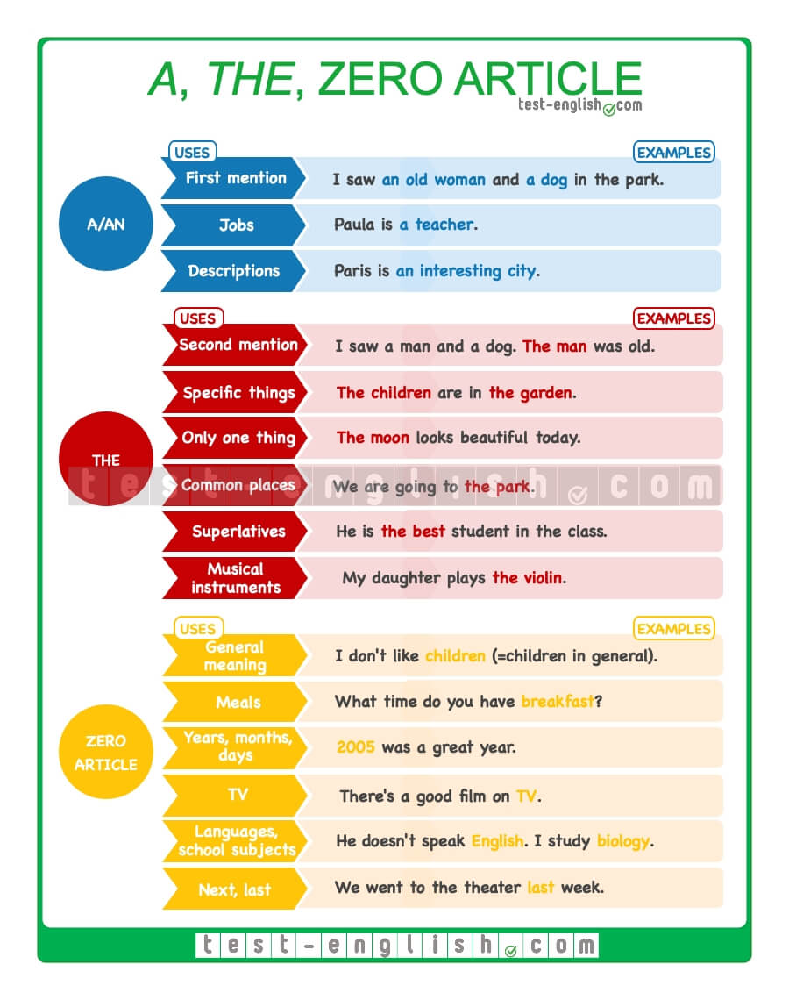

Articles
Wednesday - 18th Nov
Articles are words that define a noun as specific or unspecific. Consider the following examples:
Example: After the long day, the cup of tea tasted particularly good.
By using the article the, we’ve shown that it was one specific day that was long and one specific cup of tea that tasted good.
Example: After a long day, a cup of tea tastes particularly good.
The definite article is the word
Example:
Please give me the hammer.
Please give me the red hammer; the blue one is too small.
Please give me the nail.
Please give me the large nail; it’s the only one strong enough to hold this painting.
Please give me the hammer and the nail.
The indefinite article takes two forms. It’s the word
Example:
Please hand me a book; any book will do.
Please hand me an autobiography; any autobiography will do.